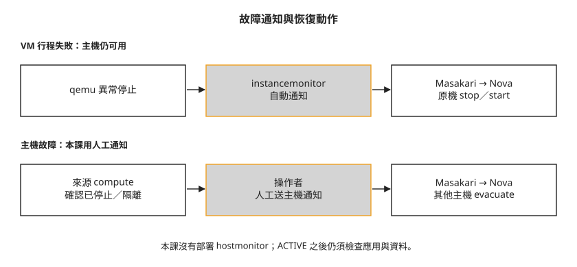
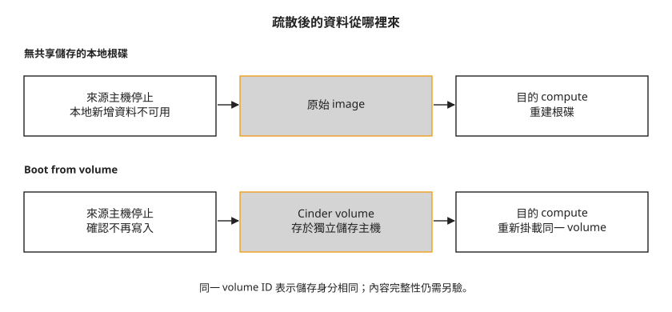

Day 31：用 Masakari 恢復失敗的 VM¶
一台 compute 主機無法連線，上面的 VM 也失去回應。把 VM 在別台主機重新啟動之前，先要回答兩件事：來源主機真的停止執行了嗎？原本的磁碟資料還能從哪裡取得？本章回到多節點實驗環境，用 Masakari 觀察行程重啟與主機故障後疏散；讀完能判斷恢復流程的前提，以及 ACTIVE 狀態還沒有證明的事。
行程失敗與主機失敗，恢復方式不同¶
Masakari 接收故障通知，再呼叫 Nova 執行恢復。它的 API 收通知，engine 編排後續工作；負責觀察故障的 monitor 則是另一個元件。
Instancemonitor 觀察 compute 上的 libvirt 事件。本章第一個實驗是某台 VM 的 qemu 行程異常結束，但主機仍可用；通知送達後，Masakari 在原主機上安排 stop／start。
Hostmonitor 用來偵測主機故障，本課沒有部署它，也沒有整合其 Pacemaker／Corosync 前提。第二個實驗在確認主機停止後，由操作者人工送通知，才讓 Masakari 呼叫 Nova evacuate：在其他主機重建實例。這不是 Day 24 在正常運作中搬移 VM 的 live migration。

所以本章驗到行程事件的自動通知，以及人工主機通知之後的恢復處理，沒有驗證完整的自動主機故障偵測。
疏散之前，要先排除兩台同時執行¶
Fencing 是確認或強制隔離來源主機，使它不能繼續執行或存取共享資料。Nova 顯示主機 down 只代表心跳條件不成立，不能證明來源 qemu 已停止；網路中斷時，VM 可能仍在原機執行。
如果這時在別台重新啟動同一份 VM，可能造成雙重執行與共享磁碟同時寫入。本課用 Azure 的 deallocate 停止實驗 compute，並在確認解除配置完成後才送通知。真正改成自動偵測時，仍要設計與驗證 fencing，不能只把「監控報失聯」直接接到 evacuate。
磁碟也影響能保留什麼。沒有共享儲存的本地根碟，可以由原始 image 重建實例，但原機上後來寫入的資料不會因此搬過去。共享根碟或 boot-from-volume 的實例則能使用原有儲存，前提是目的主機仍能存取它。

因此 Cinder 不是所有 evacuate 的必要條件；本章加它，是為了觀察同一顆 volume 跨 compute 重新掛載。這個 LVM 後端放在 controller，仍是單點，沒有因為 compute 能疏散就成為高可用儲存。
開始之前¶
需要 Day 23–24 的兩台 controller、三台 compute，以及可用的網路、image、flavor 和目的主機容量。以下 oslab-ctrl1、oslab-comp1 等是 inventory 名稱，應對應自己的環境；這套多節點環境與 Day 27–30 的單機環境分開。
本課未附完整 loop device 開機掛載 unit、canary VM 建立指令與人工主機通知 payload，以下包含操作與結果摘要。重做前必須補齊這些素材，不能把含省略號的片段當成完整命令，也不能在未確認來源主機隔離時送出恢復通知。
步驟 1：先確認控制面可用¶
先檢查 Galera 與各節點服務。若叢集已是 Primary 且成員正常，不需每次開機都執行資料庫恢復。本課曾在整組關機後無法形成正常叢集，依 Kolla 的資料庫恢復程序執行：
以下為當時的 Ansible 摘要及後續 Galera 查詢節錄：
Primary 與預期的兩個成員表示這次叢集形成成功。若仍有不同步或分割情況，要先處理資料庫，不要繼續故障演練。
本課曾出現只有 ctrl1 的多個服務不健康、ctrl2 正常的情況：
相關 API log 都出現資料庫連線失敗：
多個服務共用的資料庫入口是 ProxySQL，所以接著檢查 ctrl1 的代理。本課定位到統計資料庫檔案問題後，移走該檔並重啟，結果如下；只有符合疑難排解：單一 controller 的多個服務連不上資料庫時才採用該修法：
受影響服務重新連線或重啟後，Nova 服務摘要恢復正常：
nova-scheduler oslab-ctrl1 up
nova-conductor oslab-ctrl1 up
nova-compute oslab-comp1 up / comp2 up / comp3 up
這些是開始演練的基本條件，不是應用正常的完整證明。
步驟 2：準備獨立於 compute 的 Cinder 根碟¶
Day 23 的多節點環境沒有 Cinder。本課在 ctrl1 用檔案加 loop device 建立 LVM VG，作為實驗儲存。這是把檔案當區塊裝置的做法，不適合作為正式高可用儲存設計。
下面摘要省略了目錄建立、loop device 掛載及 systemd unit；/dev/loop7 是當時已確認的裝置，自己的環境不能直接照抄。必須先確認 loop device 對應到指定檔案且沒有其他資料，再執行會初始化裝置的 PV／VG 指令：
sudo truncate -s 60G /var/lib/cinder-lvm/cinder-volumes.img
# systemd oneshot 開機把它接成 loop device(檔略)
sudo pvcreate /dev/loop7
sudo vgcreate cinder-volumes /dev/loop7
本課建立結果如下：
Physical volume "/dev/loop7" successfully created.
Volume group "cinder-volumes" successfully created
把 ctrl1 加入 inventory 的 [storage]，在 globals 開啟 Cinder 與 Masakari，並明確關閉尚未整合的 hostmonitor：
enable_cinder: "yes"
enable_cinder_backend_lvm: "yes"
enable_masakari: "yes"
enable_masakari_instancemonitor: "yes"
enable_masakari_hostmonitor: "no"
步驟 3：部署服務，也部署 VIP 前端¶
使用多節點 inventory，先部署服務角色：
以下是部分容器分布摘要；實際受保護的每台 compute 都要確認 instancemonitor 是否可用，不能只確認 comp1：
接著部署 loadbalancer，讓 VIP 有新服務入口：
這個步驟不能因 Cinder 容器已經啟動就省略。本課在尚未補前端時曾看到：
Failed to establish a new connection: [Errno 111] Connection refused
(host='10.100.0.250', port=8776)
前端配置完成後，Cinder 服務與測試 volume 的結果如下：
available 只代表該 volume 建立完成；還要以 boot-from-volume 的測試實例確認 compute 能存取儲存。若新服務的 db sync 被拒，再查 ProxySQL 是否載入新帳號，不要把所有資料庫拒絕都視為密碼錯誤。
步驟 4：登記恢復群組與測試 VM¶
Masakari 的 failover segment 管理一組主機及其恢復策略。本章選 auto；實際目的主機還由 Nova 排程與資源、儲存、網路條件決定，不能只靠 segment 名單就假設容量或相容性足夠。
以下是本課登記三台 compute 的命令；執行環境需已有提供 openstack segment 的 Masakari CLI 外掛，本課未留存安裝步驟：
openstack segment create day31-seg auto COMPUTE
for h in oslab-comp1 oslab-comp2 oslab-comp3; do
openstack segment host create $h COMPUTE SSH day31-seg
done
openstack segment host list day31-seg
主機清單中的 on_maintenance 表示 Masakari 的維護狀態，這時是 False：
它不是電源隔離證明，也不能單獨代表 Nova 一定會接受新排程。
本課另準備了可破壞的 ha-canary 與 bfv-canary，後者從 Cinder volume 開機。建立過程未完整收錄；測試前應先確認所在 compute、磁碟來源與可用容量，並寫入自己能辨認的測試資料，供恢復後比對。以下是替行程實驗的 VM 加 metadata：
HA_Enabled=True 是本課恢復策略使用的實例標記。Masakari engine 的 [instance_failure] process_all_instances 預設 False，因此只恢復有對應標記的實例；主機故障的範圍由另外的 [host_failure] evacuate_all_instances 控制。不要把兩種事件的設定當成同一個開關。
步驟 5：分開讀兩次恢復結果¶
VM 行程失敗，原主機仍在¶
本課終止測試 VM 的 qemu 行程，instancemonitor 收到 libvirt 的異常停止事件後通知 Masakari。破壞性操作只應針對已用 VM UUID 核對的測試行程；不能猜 PID，也不能終止其他租戶的 VM。
以下保留當時的事件順序：
06:50:11 kill qemu PID 20730
06:50:12 notification: {vir_domain_event: STOPPED_FAILED} ← libvirt 通報
06:50:14 masakari engine → nova stop
06:50:18 masakari engine → nova start
06:50:30 vm=ACTIVE(下一次輪詢確認)
重點是 STOPPED_FAILED 之後出現 stop／start，最後查到 ACTIVE。這不是正常關機的測試，也不能從這一次時間戳推導恢復時間保證；ACTIVE 仍需搭配連線、檔案與應用檢查。
compute 停止後，人工通知再疏散¶
這次要測整台 compute 無法執行 VM，而不是只停一個容器。在自己的可破壞實驗環境，以下為本課對來源 compute 執行的動作；resource group 與 VM 名稱都要先確認：
先確認 Azure 已完成 deallocate，再確認 Nova 對來源主機的狀態。 本課之後人工送主機失效通知，未提供完整通知命令與 payload，所以不能宣稱照目前片段就完成自動偵測與復原。收到通知後留下的流程摘要如下：
07:09:28 comp1: down ← nova 終於判定失聯
07:17:55 lock → evacuate ← Masakari 的搬家流程
07:18:06 bfv=comp1/REBUILD ha=comp1/REBUILD
07:18:31 notif=finished bfv=comp2/ACTIVE ha=comp2/ACTIVE ← 在 comp2 復活
兩台實例最後都在 comp2 顯示 ACTIVE。Boot-from-volume 的 volume_id 保持相同、attachment 改變，表示目的主機重新掛上同一顆 volume；這不等於驗證所有資料原封不動，也沒有證明應用沒有中斷。本地根碟的實例由 image 重建，原機上的新增資料不會隨這個動作恢復。
後續應比較事前寫入的測試資料、檢查應用啟動與實際連線，並確認來源主機重新加入時不會重複啟動舊實例。本課沒有留下完整資料比對與主機重新加入的驗證結果，不能把演練直接視為正式復原程序。
疑難排解¶
mariadb_recovery 不是有效子命令¶
本課 Kolla 2025.1 使用 mariadb-recovery，拼字帶連字號。依目前版本的 help 與官方文件操作；不要只因服務不健康就直接執行 recovery。
單一 controller 的多個服務連不上資料庫¶
若 Galera 狀態正常、另一台 controller 也可使用，先查失敗節點的 ProxySQL。這些觀察縮小檢查範圍，仍不足以排除所有資料庫問題。本課的代理狀態是：
當時 crash log 指向讀取 proxysql_stats.db 的錯誤，因而採用移走統計檔的處理。這不是通用 SQL 連線修法；先確認該實例已停止、檔案確為統計資料且路徑正確，再保留原檔並重啟：
sudo mv /var/lib/docker/volumes/proxysql/_data/proxysql_stats.db{,.corrupt}
sudo docker restart proxysql
不要移走包含實際設定的資料庫；若沒有同樣的 crash 證據，先查網路、使用者設定與代理 log。
新服務 db sync 被 ProxySQL 拒絕¶
本課手動修復代理後，曾出現檔案已更新、執行中的 ProxySQL 卻尚未接受新服務帳號的情況。先比對設定與執行狀態，再依部署方式載入或重啟代理；不能推論 Kolla 每次部署新服務都必然漏掉重啟。處理後重新驗證資料庫連線與服務同步。
Cinder 已啟動，VIP 的 8776 埠仍拒絕連線¶
檢查 HAProxy 是否已有 Cinder 前端。本課使用服務 tags 後還需套用步驟 3 的 loadbalancer 設定；同類問題也可能發生在有 HAProxy 的單機環境，不是多節點專屬。
停 Docker 後，Nova 仍顯示主機 up¶
本課曾因 systemd 重啟 nova_compute，或 Docker live-restore 讓容器繼續執行，而無法用停止管理元件模擬主機故障。應確認測試真正停掉的是哪一層，不代表軟體永遠不能停止主機。
以下是當時 deallocate 的縮寫；省略號不是合法參數，請以步驟 5 的完整參數形式核對自己的資源：
重送主機通知回 already under maintenance¶
恢復流程失敗後可能留下 on_maintenance=True，再次送通知因而被拒。先查原通知、工作狀態、來源主機隔離及目的實例是否已建立，排除仍在執行或重複恢復，再決定是否清除標記重試。本課使用過：
這只改 Masakari 的維護狀態，不會完成 fencing，也不應當成強迫任何失敗流程繼續的方法。
VM 異常停止後沒有執行恢復¶
先查 libvirt 事件、monitor 是否送出通知，再看 Masakari 的實例恢復設定與 metadata。預設 process_all_instances=False 時，缺少 HA_Enabled=True 會排除該實例；限制來自恢復策略，不是看到 monitor 容器就代表所有 VM 都會重啟。
想一想¶
- Nova 顯示來源主機 down，但來源 VM 可能仍能存取共享儲存。這時能立即 evacuate 嗎？還缺哪個前提？
- 本地根碟與 boot-from-volume 的 VM 都回 ACTIVE，為什麼兩者保留的資料可能不同？同一個 volume ID 又能證明到哪裡？
- 行程故障自動重啟成功，能不能推論整台主機故障也會自動被偵測？本章主機通知由誰發出？
小結¶
Masakari 將故障通知接到 Nova 的恢復動作；行程仍有可用主機時可以原機重啟，整台 compute 停止時則需要疏散。這次主機演練用人工通知，並先以 deallocate 確認來源停止。恢復能否保留資料，取決於儲存來源與隔離條件；VM 回 ACTIVE 後仍須確認應用、資料與來源主機重新加入的安全條件。
延伸閱讀¶
想再深入，可以從這幾份開始：
- Kolla-Ansible 2025.1 Masakari 指南：API、engine 與 monitor 開關。
- Masakari 2025.1 設定參考：實例與主機故障的恢復範圍。
- Nova 2025.1 evacuate 指南：來源主機停止、從 image／volume 重建與共享儲存條件。
- ProxySQL 文件：代理設定與統計資料的管理。
下一步¶
Day 32 回到單機環境，為 API 的 VIP 入口啟用 TLS，並檢查改址後的用戶端信任與手動覆寫設定。